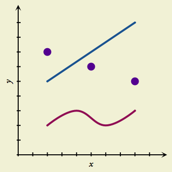

Drawing Lines and Points with the Draw Tool

The Draw tool is how you sketch data, in the form of points, on the canvas. To get into Draw mode, just click the Draw button in the toolbar, or hold down the D key (the “hot key” for this tool). Draw mode lasts for as long as you hold down the key. As you use GraphSketcher more and more, you’ll probably find that the hot keys are the quickest way to switch between tools.
While in Draw mode, you have several ways of making points (and connecting them with lines):
- Double-click to create an individual point without any line attached. You can group these and connect them with a line later, if you like.
- Click once for each point you want; the points are connected by a line. To make the last point, double-click. (With this method, you can hold Shift to constrain the angle of your line to 45-degree increments.)
- Drag across the canvas with the mouse button down to draw a line freehand. GraphSketcher does its best to create a smooth line that matches the one you drew.
If you draw a point on top of an existing line or point, the two objects snap together. So, subsequently moving one of the objects will bring the other one along for the ride, unless you detach them.
The lines and points you draw with the Draw tool follow the default styles defined by the Style inspector. To draw differently-styled objects, first deselect all objects on the canvas and then adjust the Style inspector to your liking. Any further objects you draw will match the new style settings.
Once you’ve created a line or a point, you can change it with the Modify tool.